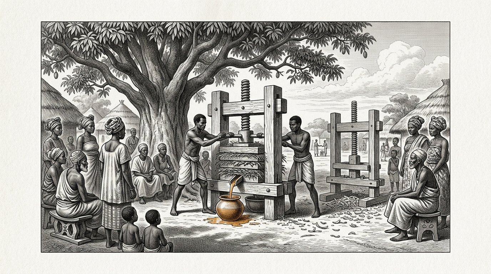
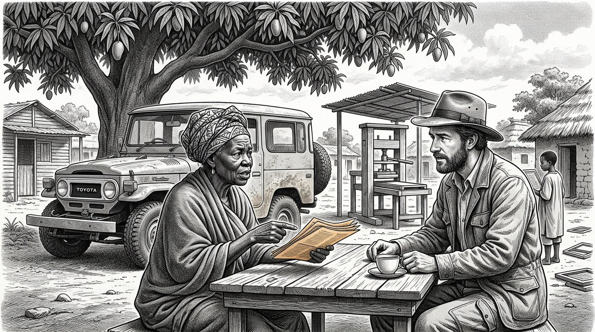
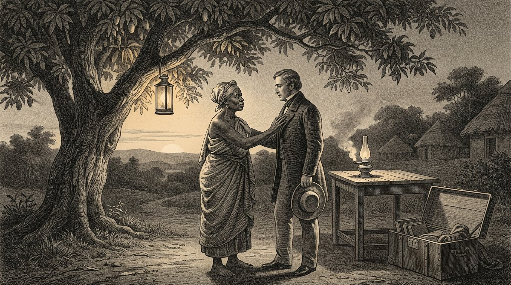

LIBRO CINCO
El Kosaris
El libro del socio

LIBRO CINCO
El libro del socio
La carta que se adelantó
Prólogo — pronunciado por Kosus
Yo soy Kosus. Cuando abra este quinto libro, habrán transcurrido trece años desde mi muerte, y Petros ya habrá tenido tantas veces entre sus manos el manuscrito que Alkion le dio que la cubierta de cuero que lo rodea se habrá vuelto suave. Este ya no es mi libro. Este es el libro de Petros. Pronuncio el prólogo solo porque la costumbre lo exige y porque quiero decir una cosa antes de que empiece.
El Libro Cuatro trataba de un líquido. El Libro Cinco trata de la relación entre dos personas que quieren elaborar juntas ese líquido en un lugar donde todavía no se ha elaborado. Esa es otra cuestión. Quien elabora un líquido necesita técnica. Quien construye una relación necesita la balanza de Timaris. La primera puede aprenderse. La segunda puede echarse a perder.
Petros partió del pueblo portuario con un cofre, una botella y el manuscrito. Antes de partir escribió una carta. La carta se adelantó en el barco que zarpó tres semanas antes que él. En la carta figuraban el nombre de Yara y la dirección de un pueblo situado en el ecuador, donde Alkion y Demira habían estado años atrás. La carta decía: soy Petros, discípulo de Kosus, sucesor de Alkion. No vengo a llevarme nada. Vengo a preguntar si me permite aprender de usted y a mostrarle lo que he aprendido.
La carta llegó tres semanas antes que Petros. Yara la leyó. La leyó dos veces. Después la guardó en un cajón y no le dijo nada a nadie. Lo que hay en el cajón saldrá a la luz en este libro cuando llegue la hora.
Quien lea este libro no aprenderá a exportar un líquido. Quien lea este libro aprenderá a construir un sistema entre dos personas sin que, al final, ninguna de las dos piense que ha perdido. Es algo menor de aprender de lo que parece. Y es algo mayor de hacer de lo que todos dicen.
Le cedo la palabra a Petros. A partir de aquí, él es el protagonista.
Kosus dice:una carta que se adelanta al viajero es la primera fibra de la balanza que se tiende entre dos personas. Quien llega sin carta debe darse prisa. Quien hace que la carta llegue antes que él, llega a su propio tiempo.
Por Jacobus van Merksteijn
Este es el Libro Cinco del Kosaris. Continúa el Libro Cuatro, en el que el líquido brotó de la hierba y el pueblo se mantuvo caliente durante un invierno sin gas. Al final del Libro Cuatro, Alkion entregó los escritos de Kosus a Petros, y Anthea cerró el libro con la promesa de que el primer discípulo de Petros escribiría a su vez el Libro Seis.
Por eso Petros se hace a la mar en este libro. Viaja al ecuador, donde ya había recorrido durante cuatro años cuando era más joven. Llega a un pueblo donde vive Yara, a quien conocen del Libro Uno Parte X como la mujer del vestido rojo. Ya no es la misma de entonces: ha envejecido, y la cooperativa que ella y sus ancianos fundaron se ha convertido en algo a lo que tres países vecinos han vuelto la mirada.
He escrito este libro después de tres encuentros con Petros a lo largo de los últimos años y de leer las cartas que escribió a Alkion y Anthea. Las cartas mismas han permanecido en poder de Anthea. Lo que leen es mi resumen de lo que él me contó y de lo que las cartas me hicieron comprender.
Quiero llamar a una cosa por su nombre. El Libro Cinco no trata de ayuda al desarrollo ni de exportación de energía. Trata de lo que significa llegar al sur siendo un hombre del norte sin traer consigo los supuestos del siglo pasado. Es más difícil de lo que parece. Petros lo sabe, y el libro muestra lo que ocurre cuando, aun así, lo intenta. En algunos aspectos fracasa. Yara lo ayuda a volver al buen camino. En otros, él le enseña algo que ella aún no sabía. Esa es la balanza en la que se pesa este libro.
Quien lea este libro y piense que trata de África no lo ha leído bien. Trata de cómo dos personas de dos continentes aprenden a construir juntas algo que ninguna de las dos habría podido construir sola. Eso es exactamente lo que quieren decir los cuatro pilares cuando fueron puestos por escrito.
Malta, agosto de 2027.
Parte 1

En el que Petros llega al ecuador, Yara lo recibe sin tenderle la mano, y la primera semana se dedica a escuchar en lugar de hablar.

Petros bajó de la embarcación a un muelle donde el sol, a las siete de la mañana, ya estaba más alto de lo que habría estado en Malta a medianoche, si allí hubiera estado. Su cofre estaba junto a él. La bolsa de cuero le colgaba del hombro. La botella de hidrolizado estaba envuelta en sus camisas, en el fondo de la bolsa.
Había un muchacho en el muelle que sabía su nombre. El muchacho dijo: usted es Petros. Yo soy Baraka. Yara me ha enviado. Venga.
Petros dijo: no tengo caballo ni carro. Baraka dijo: está bien. Hay un coche. Petros dijo: ¿usted tiene un coche? Baraka dijo: el pueblo tiene un coche. Hoy puedo conducirlo porque vengo a buscarlo.
Bajaron por el muelle hasta un Toyota viejo, amarillo, sujeto con una cuerda al lugar donde faltaba la puerta. Baraka cargó el cofre en el maletero. Dijo: ¿pesa? Petros dijo: contiene una prensa y un libro. La prensa no es grande, pero pesa. Baraka dijo: entonces pesa.
Condujeron una hora tierra adentro. El camino era rojo y accidentado, y Petros sentía que el cofre se deslizaba detrás de él con cada bache. Baraka conducía despacio y sin prisa. Dijo: ¿tiene hambre? Petros dijo: todavía no. Baraka dijo: mejor, porque no comeremos hasta llegar.
Pasaron junto a mangos, un rebaño de cabras y tres mujeres con bultos sobre la cabeza. Baraka las saludó sin detenerse. Petros dijo: aquí todos se saludan. Baraka dijo: no todos. Son Fatou, Aminata y Mariam. Pasan por aquí cada mañana. Si pasara alguien a quien no conociera, no lo saludaría. Es distinto.
Petros dijo: creo que tengo mucho que aprender sobre quién es quién aquí. Baraka dijo: no es difícil. Tiene que escuchar los nombres. Cuando alguien tiene un nombre, sabe que los demás lo conocen. Cuando alguien pasa sin nombre, sabe que no es de aquí. Eso es todo.
Llegaron a un pueblo con una larga hilera de casas bajas y un gran mango en el centro de un espacio abierto. Bajo el árbol estaba sentada una mujer con un vestido rojo, en una silla. Era mayor de lo que Petros había imaginado que sería Yara. Se levantó al ver el coche. Caminó hacia él. No tendió la mano.
Dijo: bienvenido, Petros, discípulo de Kosus. Siéntese primero. Hablaremos esta noche. Hoy escucha. Petros asintió. Dijo: gracias, Yara. Se sentó en el banco bajo el mango. Baraka le llevó agua. Y Petros pasó toda la tarde escuchando los sonidos del pueblo sin decir una palabra.
Kosus dice:quien llega a un país extraño y habla el primer día, habla de sí mismo. Quien escucha el primer día, habla de los demás el segundo. Solo quien habla de los demás es comprendido el tercero.

Yara regresó al final de la tarde. Dijo: venga conmigo. Vamos a comer. Llevó a Petros hasta una larga mesa de madera dispuesta bajo un techo de hojas secas. Ya había doce personas a la mesa: Baraka, tres hombres mayores, cuatro mujeres de la edad de Yara y cuatro niños de entre siete y trece años.
Yara dijo: este es Petros. Viene de muy lejos. Conoce a Alkion y Demira. Estuvo aquí hace diez años, pero probablemente ya no lo recuerden, porque entonces pasó cuatro años recorriendo todos los pueblos de la costa sin quedarse más de un mes en ningún lugar.
El mayor de los hombres sentados a la mesa dijo: no permaneció en ningún sitio el tiempo suficiente para que lo conocieran. Eso les ocurre a menudo a los norteños. Petros dijo: lo sé, y esta vez quiero hacerlo de otra manera. Quiero quedarme aquí tanto como sea necesario, y no menos.
Yara dijo: ¿cuánto es necesario? Petros dijo: no lo sé. Lo aprenderé de usted. Yara dijo: es una buena respuesta. Recuerde que la ha dado. Cuando se impaciente dentro de tres meses, se lo recordaré.
Comieron. Había arroz con pollo y una salsa verde que Petros no conocía. Preguntó qué era. Una de las mujeres dijo: es Moringa. Petros dijo: la conozco. La prensamos junto con la hierba. La mujer dijo: ¿la prensa? Petros dijo: sus hojas, junto con el Juncao. Eso vuelve claro el líquido.
La mujer dijo: nosotros la comemos. La secamos, la molemos y la ponemos en la salsa. No la prensamos. Petros dijo: quizá sea mejor así. Nunca se me ocurrió que también se pudiera comer Moringa. Siempre la he considerado un auxiliar.
Yara dijo: eso es lo primero que aprenderá de nosotros. Lo que usted llama un auxiliar es para nosotros un cultivo. Lo que usted llama un cultivo es para nosotros una medicina. Cuando prensa Moringa, desperdicia algo. Cuando la come, se hace más fuerte. Si vamos a trabajar juntos, primero debemos acordar qué comemos y qué prensamos. De lo contrario, arruinará nuestra cocina y nos ofenderá sin saberlo.
Petros asintió. Dijo: lo anotaré. Yara dijo: escríbalo después. Ahora coma. Comieron. Las estrellas aparecieron sobre el techo de hojas. Petros sintió que estaba más lejos de casa que nunca, y al mismo tiempo sintió que se encontraba exactamente en el lugar correcto.
Kosus dice:quien en un país extraño reconoce un auxiliar que allí es un cultivo, debe saber que no ha llegado junto a un proveedor. Ha llegado a una cocina. No ofenda a la cocina, o no volverá a comer con ellos.

En la segunda noche, Yara llevó a Petros a su casa. Era una casa larga y baja, con una veranda. En la veranda había un escritorio. Sobre el escritorio había un cajón. En el cajón había papeles.
Yara abrió el cajón. Sacó una carta. Dijo: la escribió usted tres semanas antes de su llegada. La he leído dos veces. La guardé en este cajón. No le dije a nadie que la había recibido.
Petros dijo: ¿por qué no? Yara dijo: porque quería ver si llegaría como la carta prometía. En ella escribió que no venía a llevarse nada. Escribió que venía a preguntar. Durante tres semanas observé cómo llegaría. Hoy lo vi llegar. No vino a llevarse nada. Vino a preguntar. Ahora la carta puede salir del cajón.
Petros dijo: ¿y si hubiera llegado de otra manera? Yara dijo: entonces la carta habría tenido que quedarse en el cajón. Y mañana le habría dicho que era bienvenido en el pueblo de más adelante, donde vive mi cuñado. Es educado y hospitalario, y lo habría alojado durante tres semanas sin que usted hubiera aprendido nada de nosotros. Habría regresado con historias y no con conocimiento.
Petros dijo: ¿cómo supo que yo sería distinto? Yara dijo: no lo sabía. Lo esperaba. Su carta estaba escrita de otra manera que las cartas que recibo de otros norteños. Ellos siempre comienzan con lo que vienen a traer. Usted comenzó con lo que venía a preguntar. Era una buena señal. Pero las señales pueden mentir. Por eso la carta esperó tres semanas.
Petros preguntó: ¿qué me escribió en respuesta? Yara dijo: nada. No respondo a las cartas de personas que no conozco. Respondo a las personas que llegan. Es distinto. El papel miente con facilidad. Las personas también mienten, pero en ellas puedo ver cuándo.
Petros asintió. Dijo: entonces la carta en el cajón es ahora un comienzo. Yara dijo: no, es un final. Lo que hagamos a partir de mañana ya no tiene que escribirlo. Hablaremos. Construiremos. Y cuando regrese a casa, escribirá a Alkion lo que se ha construido, no lo que se ha dicho. Esa es la manera.
Petros abrió la carta doblada. Vio su propia letra de tres meses atrás. Sintió algo extraño: la carta ya no le pertenecía. Era de Yara. Durante tres semanas, ella había llevado consigo aquellas palabras sin que él lo supiera. Ahora se las devolvía, no como respuesta, sino como una llave.
Kosus dice:una carta que envía por delante deja de ser suya en cuanto llega. La lleva quien la lee y la devuelve en la hora que el lector elige. Quien escribe lo sabe. Quien escribe sin saberlo solo se escribe a sí mismo.
Parte II
Parte 2

En el que Petros descubre que aquí la hierba se cultiva desde hace quince años, que los ancianos saben más que él al respecto y que la prensa que lleva consigo plantea la pregunta de qué deja atrás al faltar.

Al tercer amanecer, Yara llevó a Petros al campo situado detrás de la aldea. Era Juncao más alta que un hombre, hasta donde alcanzaba la vista. Entre cada hilera de Juncao había árboles de Moringa, separados unos tres metros entre sí.
Petros se detuvo en el lindero del campo. Dijo: ¿cuánto tiempo lleva esto aquí? Yara dijo: este terreno, quince años. El terreno al otro lado del río, doce años. El terreno junto a la aldea vecina, nueve años. En total tenemos unas seiscientas hectáreas en nuestro distrito.
Petros dijo: ¿quién les enseñó esto? Yara dijo: mi madre me enseñó a plantarlo. Ella lo aprendió de un ingeniero de China que vino a trabajar aquí en los años ochenta y que le dio el Juncao. Entonces ella tenía dieciocho años y yo tres. Diez años después planté la Moringa entre las hileras, después de hablar con un viejo agricultor que me contó que la Moringa protege las raíces.
Petros dijo: entonces nosotros no lo inventamos. Yara dijo: no. Su Alkion no lo inventó. Su Kosus no lo inventó. Yo no lo inventé. Nadie lo inventó. La hierba ya estaba aquí antes de que descubriéramos qué podíamos hacer con ella.
Petros dijo: ¿y el prensado? Yara dijo: nosotros no lo hacemos. Cortamos la hierba y alimentamos con ella a nuestros animales. Secamos las hojas y las quemamos en nuestras estufas. Comemos la Moringa. Con las raíces del Juncao hacemos una medicina contra la fiebre. No prensamos porque nunca hemos visto una prensa lo bastante pequeña para estar aquí bajo el árbol de mango sin una fábrica alrededor.
Petros dijo: llevo una conmigo. En la caja. Yara dijo: lo sé. Baraka ha notado el peso. Me dijo que dentro hay algo pesado que no es un libro ni una botella. Lo he supuesto. Quiero ver la prensa esta tarde.
Petros dijo: ¿y si funciona? ¿Qué significa para ustedes? Yara dijo: no lo sé. Primero quiero mirar. Si funciona, hablaremos después. Si no funciona, no necesitábamos hablar. Hablar cuesta tiempo y hacer promesas cuesta más tiempo. Nosotros lo hacemos al revés.
Petros reflexionó. Dijo: ese es el orden inverso de cómo me enseñaron a hacerlo en casa. Yara dijo: lo sé. Allí primero se firma un contrato y después se comprueba si funciona. Aquí primero se comprueba y después se llega a un acuerdo. Ambas cosas son posibles. Nosotros lo hacemos a nuestra manera porque vivimos aquí y usted está de visita.
Kosus dice:quien llega con una prensa y cree que trae algo, primero debe aprender que el cultivo ya está plantado y que la gente ya come. La prensa añade algo que no estaba. No sustituye algo que sí estaba. Quien confunde ambas cosas pierde a la gente antes de haber instalado la prensa.

Por la tarde instalaron la prensa bajo el árbol de mango. Baraka sacó las piezas de la caja. Los ancianos, tres mujeres y siete niños formaron a su alrededor un semicírculo.
Petros mostró cómo se corta. Baraka trajo del campo un manojo de Juncao y un puñado de hojas de Moringa. Petros mostró cómo se disponían las capas: hierba, hoja, hierba, hoja. Apretó el tornillo. Todos miraron.
No salió nada. Petros apretó más. Aún no salió nada. Apretó con todas sus fuerzas. Salió una gota. Luego dos. Después, nada más.
Petros se puso rojo. Pensó: he hecho esto veinte veces en Malta y seis en la aldea portuaria. ¿Por qué aquí no funciona?
Yara no dijo nada. Miró el campo y luego la prensa. Dijo: ¿qué edad tenía la hierba que prensaba en casa? Petros dijo: tres meses después del último corte. Yara dijo: ¿y esta? Señaló el manojo que estaba en la prensa. Petros dijo: no lo sé. ¿Baraka?
Baraka dijo: esta hierba tiene nueve meses. No hemos segado este campo desde enero porque la dejamos crecer para obtener semilla. Segaremos la semana que viene.
Yara dijo: entonces su prensa es para hierba más joven que la que había aquí hoy. Cuando segemos la semana que viene, lo intentaremos de nuevo. Hoy hemos aprendido que su prensa es más precisa que la organización de su recepción aquí. No es culpa suya ni nuestra.
Petros soltó la prensa. Dijo: debería haberlo preguntado. Yara dijo: sí. Nosotros también podríamos haberlo dicho. No lo dijimos porque quería verlo trabajar. Quería saber si admitiría el error cuando algo saliera mal. Lo ha admitido. Eso era más importante que saber si funcionaba.
Petros dijo: aquello fue una prueba. Yara dijo: no fue una prueba. Así es como descubrimos quién es usted. Si se hubiera enfadado con la prensa, con Baraka o conmigo, mañana por la mañana habríamos pedido un coche para llevarlo al puerto. No se ha enfadado. Se ha quedado junto al error. Eso es Aletheris. Le estamos agradecidos por haberlo demostrado.
Uno de los ancianos del borde dijo: ahora sabemos que podemos hablar con usted. La semana que viene prensaremos juntos hierba joven. Si entonces sale algo, tendremos algo de lo que hablar. Si no sale nada, se quedará de todos modos otro mes. Ya puede contar hasta cien en nuestra lengua.
Petros se rio. Era la primera vez desde su llegada. Dijo: todavía no puedo. Pero voy a aprender.
Kosus dice:una demostración que fracasa en compañía de personas a las que aún no conoce es el camino más corto hacia la honestidad mutua. Quien intenta mostrar honestidad en una demostración exitosa no llega más allá de causar impresión. Quien admite su error en una demostración fallida ha equilibrado la balanza antes de que se haya intercambiado nada.

Una semana después segaron una parte del campo contiguo. La hierba que llevaron era de un verde claro, de fibra tierna, y olía más dulce que la hierba vieja de la semana anterior.
Volvieron a instalar la prensa bajo el árbol de mango. El mismo semicírculo la rodeaba, los mismos niños, los mismos ancianos. Baraka dispuso las capas.
Petros apretó el tornillo. Esta vez, después de diez minutos, salió un chorrito. Ámbar, claro, reluciente. En veinte minutos llenó media botella. Yara miró. No dijo nada.
Al terminar de prensar, Petros dijo: ¿quiere probarlo? Yara dijo: ¿en qué? Petros dijo: en la lengua. Ella se negó. Dijo: solo probaré algo que hayamos hecho juntos y que sea nuestro. Esto todavía es suyo. Probaré después.
Petros dijo: ¿y la llama? Yara dijo: eso es para los niños. Tomó un pequeño cuenco de barro y se lo entregó a una niña de ocho años que estaba a su lado. Dijo: vierte una cucharada. La niña lo hizo. Yara tomó una cerilla y se la dio a la niña. Dijo: enciéndelo.
La niña lo encendió. Surgió una llama azul con un núcleo amarillo dorado. Los niños retrocedieron. Luego volvieron a mirar.
Yara dijo: esto es lo que ha traído. Gracias por habérselo mostrado a los niños en lugar de a mí. Petros dijo: ¿por qué es importante? Yara dijo: porque los niños lo recordarán toda la vida y nosotros aún no hemos tomado ninguna decisión. Si primero me hubiera mostrado la llama a mí, yo habría sido quien tuviera que decidir algo. Ahora hay siete niños que han sido testigos, que no le deben nada y que, sin embargo, lo recordarán todo. Eso es mejor para usted y mejor para nosotros.
Petros asintió. Dijo: no se me había ocurrido. Yara dijo: lo sé. Quiero preguntarle algo. ¿Cuántos litros puede obtener al día con esta prensa? Petros calculó. Dijo: diez litros si nos ayudan cuatro adultos. Yara dijo: ¿y cuánta hierba cuesta eso? Petros dijo: unos doscientos kilos al día. Yara dijo: ¿y esos doscientos kilos, cómo llegan del campo a la prensa? Petros no lo sabía. Yara dijo: entonces eso es lo siguiente que debemos averiguar. Una prensa sin una cadena que la alimente es un trozo de madera. Una prensa con una cadena es un sistema. Estamos construyendo un sistema.
Kosus dice:una prensa es un trozo de madera. Una cadena de personas que alimentan la prensa y aprenden de ella es un sistema. Quien vende una prensa vende madera. Quien construye un sistema comparte algo que permanece después de la muerte de la primera prensa.
Parte III
Parte 3

En la que Petros y Yara construyen juntos una segunda prensa con madera local, en la que las mujeres aprenden todo lo que puede hacerse con el líquido, y en la que la aldea tiene por primera vez algo que es un núcleo y no una cadena.

Yara llevó a Petros hasta el carpintero de la aldea. Se llamaba Abdoulaye. Era viejo, y sus manos eran de esa clase que ya no tiembla aunque se tengan ochenta años.
Yara dijo: Abdoulaye, queremos construir otra prensa. Esta vez con nuestra propia madera. Así, cuando Petros regrese al norte, tendremos cuatro prensas y no una sola que se marche con él.
Abdoulaye miró la prensa de Petros. Palpó la madera. Dijo: esto es roble de un país frío. Nosotros no tenemos roble. Tenemos palisandro y madera de mango. Petros dijo: ¿cuál de las dos puede recomendarme? Abdoulaye dijo: el palisandro es más resistente y no se astilla. El mango es más ligero, pero menos duradero. Para una prensa que debe durar quince años, el palisandro es mejor.
Petros dijo: ¿puede reproducir la prensa con palisandro? Abdoulaye dijo: puedo reproducirla. Puedo hacerla mejor. Su prensa tiene un tornillo fijo en una sola tuerca. Yo pondría una segunda tuerca encima, porque una de las dos se desgasta. Su prensa no tiene abrazaderas laterales. Yo se las añadiría, porque así la hierba queda sujeta de manera uniforme. Su prensa no tiene un canal en la parte inferior. Yo colocaría un canal de madera que condujera el líquido hasta la botella sin que goteara. Su prensa pierde así un litro al día. Eso es un tres por ciento. En quince años, equivale a cuatro meses de producción.
Petros escuchó. Dijo: eso es lo que quiero aprender de usted. ¿Puede ayudarme a añadir también esas mejoras a mi prensa, para que pueda incorporarlas en casa? Abdoulaye dijo: sí. Construiremos juntos dos prensas. Yo le enseñaré a hacer la mía y le mostraré dónde puede mejorarse la suya. Usted me enseñará qué es el líquido en sí. Si hacemos esto durante tres semanas, tendremos cuatro prensas: mis dos nuevas, la suya mejorada y el conocimiento en cuatro cabezas.
Yara dijo: y le pagaré lo que pida de la caja común. Abdoulaye dijo: a usted no le pido nada. Usted es mi hermana. A Petros le pido que enseñe a Baraka y Aminata a producir y almacenar el líquido, y que al cabo de tres semanas se marche a casa sin la prensa y la deje aquí. Petros miró a Abdoulaye. Miró a Yara. Dijo: ese es un buen precio.
Yara asintió. Dijo: ahora estamos construyendo un sistema.
Kosus dice:un artesano que señala los defectos de su prensa sin ofenderlo es el artesano que busca. Encuéntrelo. Páguelo con conocimiento y no solo con dinero. El conocimiento lo mantendrá a su lado. El dinero lo convertirá únicamente en su proveedor.

Mientras Abdoulaye y Petros trabajaban en las prensas, al cuarto día tres mujeres se acercaron a Yara. Se llamaban Aminata, Fatou y Aissatou. Cada una llevaba una pequeña lata llena de carbón.
Aminata dijo: Yara, hemos oído que el líquido arde sin humo. Queremos saber si también puede servir para cocinar. Nuestro carbón se está encareciendo, y recoger la leña nos cuesta caminar dos horas al día. Si el líquido puede cocinar, ahorraremos tiempo. Yara llamó a Petros. Dijo: ¿puede responder a esto?
Petros dijo: puede cocinar. En nuestra aldea construimos para uso doméstico un pequeño fogón que consume medio litro al día y permite a una familia preparar tres comidas. Aminata dijo: ¿y el quemador? Petros dijo: lo diseñó Wilm, nuestro herrero. No tengo ningún quemador conmigo. Pero sí tengo los dibujos.
Fatou dijo: tenemos un herrero. Se llama Ibrahim. ¿Puede reproducirlo? Petros dijo: déjeme hablar con él mañana por la mañana. Si puede leer los dibujos, entonces sí.
A la mañana siguiente, Petros, Yara y las tres mujeres fueron a ver a Ibrahim. Era más joven de lo que Petros había esperado, tendría unos treinta años. Examinó los dibujos. Dijo: esto se parece a una lámpara que conozco. Puedo hacerlo. ¿Para estas mujeres de la aldea? Aminata dijo: primero para nosotras tres. Si funciona, para las demás.
Ibrahim dijo: denme tres semanas y tres kilos de cobre. Aminata dijo: el cobre lo tenemos. Fundimos tuberías viejas de una antigua misión francesa que ya no se utiliza.
Petros miró a Yara. Yara dijo: ¿lo ve? Petros dijo: sí. Lo veo. Yara dijo: ¿qué ve? Petros dijo: veo que tiene un sistema que funciona sin mí. Ibrahim fabricará el quemador. El cobre procede de la misión. La demanda nace de las tres mujeres. Yo aportaré el líquido. Solo esto último depende de mí. Si aprenden a producirlo, dejaré de ser necesario.
Yara dijo: eso es exactamente lo que estamos haciendo. Y para usted no es algo malo. Entonces podrá ir al siguiente lugar sin que dependamos de usted. Mientras esté ligado a alguien que lo necesita, nunca podrá marcharse. Cuando haya liberado a alguien de su dependencia, usted también será libre.
Petros guardó silencio largo rato. Luego dijo: eso es exactamente lo que Kosus también me enseñó. Ahora lo oigo por segunda vez, de otra boca, y tiene más sentido que la primera.
Kosus dice:cuando libera a alguien de su dependencia, usted también queda libre. Cuando ata a alguien a usted, pierde la libertad de marcharse a cualquier otro lugar. El camino más corto hacia su propia libertad pasa por la libertad de aquel a quien ayuda.

Al final de su primer mes, Petros escribió por primera vez una carta a Alkion. Escribió a la luz de una lámpara que ardía con su propio líquido. Escribió en un papel que Yara le había dado. La carta era breve.
Alkion, llevo aquí un mes. Hasta ahora no he aprendido nada nuevo sobre el hidrolizado. Pero sí he aprendido tres cosas sobre cómo trabajar con personas que llevan veinte años más que tú sabiendo lo que saben y que no te necesitan. Las enumero.
Primero. No llegues con una solución. Llega con una prensa, un cuaderno y una botella. Deja que la gente mire. Deja que haga preguntas. Responde solo a lo que te pregunten y no a lo que tú hubieras querido contar.
Segundo. No hagas perfecta tu primera demostración. Cuando fracasa y admites el error, obtienes confianza más deprisa que cuando muestras algo perfecto cuyo modo de realización ellos no pueden comprender. La perfección despierta sospechas en el sur.
Tercero. Mientras tanto, construye algo que funcione sin ti. Todo aparato que traigas debe poder reproducirse localmente. Todo conocimiento que aportes debe quedar en manos de la comunidad. El día que te marches, todo lo que haya allí debe seguir en pie sin ti.
Cada semana descubro que Yara va tres pasos por delante de mí. Pensaba que venía aquí a traer algo. Descubro que vengo aquí a aprender. Creo que Kosus lo supo desde el principio y que nunca lo escribió explícitamente para mí, para Alkion, para usted, para Anthea ni para nadie, porque sabía que teníamos que descubrirlo por nosotros mismos.
Por ahora me quedo aquí. Creo que Baraka escribirá el Libro Seis, pero todavía no quiero decírselo porque tiene doce años y sería un peso excesivo. Esperaré hasta que cumpla dieciséis. Entonces le entregaré el cuaderno.
Saluda a Demira y a Anthea. Dile a Anthea que he traído su Libro Cuatro y que Yara ha leído el prólogo y ha dicho: ese hombre sabía lo que hacía. Es el mayor elogio que puede salir de sus labios.
Su alumno, Petros.
Dobló la carta. La metió en un sobre. A la mañana siguiente se la entregó a un comerciante que se dirigía al puerto y que prometió depositarla en un barco rumbo a Europa. Seis semanas después, la carta llegó a Alkion. Ella la leyó. Sonrió. Le dijo a Demira: ha llegado. Y al mismo tiempo ha llegado a sí mismo. Esa es la mejor clase de llegada que una persona puede alcanzar.
Kosus dice:una carta que llega de lejos y es sincera transforma al lector más que cien conversaciones con quien está cerca. Quien tiene un alumno lejos de casa debe conservar sus cartas. Juntas cuentan lo que el alumno aprende en diez años. Sin las cartas, perdemos esos diez años.
Parte IV
Parte 4

En la que un funcionario de la capital se entera de la existencia de la cooperativa y se presenta con preguntas corteses que no lo son, y en la que Yara muestra a Petros cómo recibir a hombres así sin darles lo que han venido a buscar.

En el segundo mes de la estancia de Petros, una tarde entró en la aldea un jeep gris. Del jeep bajó un hombre con un traje de color claro. Iba cuidadosamente vestido y sus zapatos estaban llamativamente limpios para alguien que acababa de recorrer un camino de tierra roja.
Preguntó por Yara. Baraka le señaló el mango. El hombre se dirigió hacia allí. Yara estaba sentada en su silla. No se levantó. Dijo: bienvenido. Siéntese.
El hombre se sentó. Se presentó como el señor Diallo, asesor del Ministerio de Industria en la capital. Dijo: señora Yara, nos llegan buenos informes sobre su cooperativa. Nos gustaría ver si podemos serles útiles.
Yara dijo: ¿útiles de qué manera? Diallo dijo: tenemos un programa para ampliar las iniciativas locales. Cuando una cooperativa alcanza cierto tamaño, puede optar a una asociación con uno de nuestros inversores internacionales. Podemos ayudarla a dar ese paso.
Yara dijo: no tenemos previsto dar ese paso. Diallo dijo: lo comprendo. Pero ahora se presenta la oportunidad. Hay un grupo de Dubái interesado en los biocombustibles y dispuesto a invertir una cantidad considerable.
Yara dijo: ¿y qué querrían? Diallo dijo: una participación mayoritaria. A cambio de capital y de acceso al mercado. Ustedes seguirían colaborando como socio local.
Yara dijo: no tenemos una participación mayoritaria que ofrecer. No somos una empresa. Somos una aldea que hace algo en común. No hay nada que entregar a nadie.
Diallo sonrió cortésmente. Dijo: señora, eso podemos arreglarlo. Podemos ayudarla a constituir una entidad jurídica que lo haga posible. Es un pequeño trámite administrativo.
Yara dijo: y, una vez constituida la entidad y vendida la participación mayoritaria, ¿qué será de la aldea? Diallo dijo: la aldea seguirá ahí. Ustedes recibirán ingresos. Recibirán asistencia técnica. Pasarán a formar parte de algo más grande.
Yara dijo: ¿y las decisiones? Diallo dijo: las tomarán los propietarios, como en cualquier empresa. Pero ustedes siempre tendrán voz.
Yara guardó silencio durante largo rato. Luego dijo: llevo treinta años tomando decisiones sobre este campo y esta hierba. Pregúntele a mi madre, que tomó decisiones durante quince años antes que yo. Ella decidió dónde irían las hileras. Yo decidí qué Moringa plantar entre ellas. Mi hija decidirá qué vendrá después de treinta años de Moringa. Si le entrego nuestra mayoría, mi hija entregará su decisión a otro.
Diallo dijo: no es así, señora. Yara dijo: es exactamente así. Sé cómo funcionan estos contratos. Mi aldea vecina firmó uno para el algodón. Ahora cultivan lo que los propietarios les dicen que deben cultivar. No son más pobres, pero ya no son una aldea. Son una fábrica sin paredes.
Diallo siguió siendo cortés. Dijo: es una elección, señora. La respeto. Solo quería mencionar esa posibilidad.
Yara dijo: gracias por haberla mencionado. Ahora sé que existe y que también se la menciona a otras aldeas. Hablaré con los demás ancianos de nuestra región. Juntos sabremos qué hacer cuando se presente en otro lugar.
Diallo comprendió que la conversación había terminado. Se levantó. Dijo: señora, ¿podría pedirle aún su hospitalidad para pasar aquí la noche? El camino de regreso es largo. Yara dijo: puede hacerlo. Baraka le indicará la casa de huéspedes.
Diallo se alejó. Petros, que todo el tiempo había estado sentado en el suelo, a la sombra, sin decir nada, miró a Yara. Yara dijo: ¿por qué se ha quedado callado? Petros dijo: porque lo ha hecho mucho mejor de lo que yo lo habría hecho.
Kosus dice:un hombre con un traje limpio que pregunta por su mayoría no viene por su bienestar. Viene por su firma. Quien conserva la cortesía y mantiene la conversación a su propio ritmo, lo deja marcharse sin firma y sin enemigo. Quien se enfada no gana nada y pierde la cortesía de su aldea.

Tres semanas después de la visita de Diallo llegó una carta de la capital. Estaba escrita en papel oficial y venía en un sobre rojo. Yara la abrió en la veranda, con Petros y Baraka como testigos.
La carta era de un director del Ministerio de Agricultura. Escribía: señora Yara, hemos sido informados de que en su aldea se llevan a cabo actividades industriales no registradas. Le rogamos que se persone en nuestras oficinas en el plazo de treinta días para registrar sus actividades y solicitar los permisos necesarios.
Petros dijo: es la misma carta que recibí en Bruselas. Yara dijo: no. Es otra carta. Esta es más tajante. En Bruselas querían ponerlo a prueba. Aquí quieren aplastarla. Diallo ha informado de que no colaboramos. Ahora lo intentan por otra puerta.
Petros dijo: ¿qué va a hacer? Yara dijo: lo que haya que hacer. Iré a la capital, pero no sola. Llevaré a tres ancianos, y no lo llevaré a usted. Usted es del norte y su presencia les daría argumentos que de otro modo no tendrían.
Petros dijo: ¿qué argumentos? Yara dijo: que tenemos un operador extranjero. Que usted se está beneficiando de nuestro trabajo. Que nos explota. Podrían decir todo eso, y tres periódicos de la capital lo reproducirían. Si voy sin usted, no tendrán nada sobre lo que escribir.
Petros dijo: ¿y qué les dirá? Yara dijo: que tenemos una práctica local. Que esta hierba lleva aquí quince años. Que el prensado es una actividad de la aldea, no una industria, y que no necesita permiso. Si insisten, diremos que estamos dispuestos a solicitar el permiso correspondiente a una actividad aldeana. Pediremos el permiso más pequeño que exista. Esperan obligarnos a entrar en el más grande. Lo evitaremos ocupando voluntariamente el más pequeño.
Petros reflexionó. Dijo: es exactamente lo que hicimos también en Bruselas. Pedimos que no nos clasificaran y aceptamos que no podíamos ampliar la escala. Así permanecimos por debajo del radar.
Yara dijo: ha sido un buen entrenamiento para usted. Creo que aquí también funcionará. Hay una diferencia. En Bruselas, el seto de espinos es viejo y crece despacio. Aquí el seto de espinos es joven y más afilado. Lo han plantado personas que saben que aún no tienen todo el dinero. Muerde más hondo.
Petros dijo: entonces, ¿por qué no debo ir? Yara dijo: porque, cuando muerdan más hondo, quiero hablar a través de sus hombros con los que deliberan sentados detrás de ellos y con el pueblo que está detrás de esos deliberantes. Esa conversación la mantengo en mi propia lengua, con mi propia gente. Su presencia me lo impediría.
Petros asintió. Dijo: entendido. Me quedaré aquí y seguiré con Abdoulaye en la segunda prensa. Yara dijo: sí. Y cuando vuelva, tendremos una prensa más y un problema menos. Ese es el orden correcto.
Kosus dice:un ataque de una gran potencia no se resiste con una potencia mayor. Se resiste pidiendo que lo clasifiquen en la categoría más pequeña y aceptándola. El atacante quería situarlo en la categoría mayor porque allí están sus ganchos. En la menor no hay ganchos. Allí no hacen falta.

Yara estuvo fuera diez días. Petros trabajó con Abdoulaye. Cuando ella regresó, habían terminado la segunda prensa. La vio en la veranda al bajar del jeep. Sonrió. Dijo: es más bonita que la suya.
Petros dijo: el aprendiz de Abdoulaye hizo las tuercas laterales. Yara dijo: entonces es bonita porque tres personas han contribuido a construirla. Ven, tengo algo que contarte.
Se sentaron a la mesa. Yara dijo: nos han concedido un permiso como «cooperativa aldeana de transformación vegetal tradicional». Es la categoría más pequeña que tienen. Hay doscientas cuarenta en el país. Nos han inscrito con el número ciento ochenta y cinco. Ya no somos especiales.
Petros dijo: es la mejor categoría. Yara dijo: es la mejor categoría. Y he traído otra cosa. Sacó un papel de su cesta. Dijo: esta es una lista de otras cuatro cooperativas aldeanas que se dedican a la transformación vegetal. Las conocí en la sala de espera del ministerio. Mientras esperábamos, hablamos entre nosotros. Todas tienen el mismo problema que nosotros: reciben la visita de hombres con trajes limpios y cartas en sobres rojos.
Petros dijo: ¿y? Yara dijo: acordamos reunirnos dentro de tres meses. En una aldea junto al río, donde vive una de ellas. Cada uno llevará a dos ancianos. Hablaremos de lo que hacemos y de lo que les ofrecen. Decidiremos juntos qué hacer cuando llegue la próxima carta.
Petros dijo: eso es una red. Yara dijo: es el comienzo de una red. Las redes no se construyen en salas de reuniones. Se construyen en salas de espera. No habríamos tenido una sala de espera si no hubiera llegado la carta. Ahora tenemos una sala de espera y una lista.
Petros dijo: es rodear el seto de espinos utilizando al propio atacante. Yara dijo: eso es exactamente. Cuando se vea obligado a ir a un lugar al que no quería ir, fíjese en quién más tiene que estar allí. Allí están sus semejantes. Sin la carta, nunca los habría conocido. La carta era su invitación a su propio bando.
Petros dijo: lo anotaré. Yara dijo: no, lo haré yo misma. En el cuaderno que ahora también llevo. Empecé uno hace dos semanas. Su llegada me impulsó a hacerlo. Ya he escrito doce páginas.
Petros alzó la mirada, sorprendido. Yara dijo: ¿qué se había imaginado? ¿Que solo los del norte llevan cuadernos? Es un malentendido. Nosotros también escribimos. Solo que no escribimos para editores. Escribimos para nuestras nietas. Ese es un horizonte más largo.
Kosus dice:quien es enviado a una sala de espera debe esperar. Quien escucha en una sala de espera descubre a sus semejantes. El atacante que lo reúne con otros en una sala de espera no lo ha atacado. Le ha dado una red. Déle las gracias en silencio y utilícela.
Parte V
Parte 5

En la que Baraka se hace adulto, Petros le entrega el cuaderno después de tres años, Yara se despide sin soltarlo, y el Libro Cinco termina con un sexto libro que comenzará en otro lugar.

Baraka cumplió dieciséis un martes de diciembre. Su madre preparó arroz con pollo y salsa verde. Yara le regaló una camisa nueva. Petros le entregó el cuaderno de Kosus. Dijo: esto no es un regalo de cumpleaños. Es una responsabilidad. Piénselo durante tres días antes de aceptarlo.
Baraka no aceptó el cuaderno. Dijo: pensaré durante tres días. Al cuarto día fue a ver a Petros. Dijo: lo acepto. Petros dijo: ¿por qué? Baraka dijo: porque en esta región no hay nadie más que vaya a aceptarlo. Si digo que no, volverá a usted y viajará con usted al siguiente lugar. Quiero que lo que usted y Yara han construido permanezca aquí. Por eso lo acepto.
Petros dijo: es una buena razón. Baraka dijo: hay otra razón. Lo he visto trabajar durante tres años. He visto a Yara trabajar durante toda mi vida. Cuando usted se vaya, alguien tendrá que transmitirle a Yara lo que ella le ha enseñado, y transmitirme a mí y a los niños que vengan después de mí lo que Yara le ha enseñado a usted. Es una tarea que viene de ambos lados. Yo soy de ambos lados. Soy de aquí y he llegado a conocerlo a usted. Por eso soy el indicado.
Petros le entregó el cuaderno. Baraka lo aceptó con ambas manos. Dijo: ¿puedo escribir en él? Petros dijo: debe escribir en él. De lo contrario, dejará de ser un cuaderno vivo.
Yara estaba a su lado. Le dijo a Baraka: y no escriba solo lo que sucede. Escriba también lo que se piensa mientras sucede. De lo contrario será cronología, y no sabiduría. Los funcionarios pueden hacer cronologías. La sabiduría tendrá que añadirla usted. Ese es su trabajo.
Baraka asintió. Dijo: lo intentaré. Cometeré errores. Petros dijo: eso es lo que Kosus me dijo cuando me mostró esto por primera vez. Dijo: cometerá errores, y eso está bien. Los errores que se escriben dejan de ser errores. Se convierten en lecciones para quienes vienen después de usted. Solo los errores que no se escriben siguen siendo errores.
Baraka llevó el cuaderno a su casa. Su madre lo vio entrar con el cuaderno bajo el brazo. Le preguntó qué era. Baraka dijo: es un libro de Kosus. Su madre dijo: ¿quién es Kosus? Baraka dijo: es un anciano de un país lejano. Está muerto. Pero su cuaderno ha llegado hasta nosotros. Ella dijo: ¿y por qué lo tienes tú? Baraka dijo: porque Petros me lo ha dado y Yara ha dado su consentimiento. Ella dijo: entonces está bien. Ponlo en la estantería, junto a mi corán. Baraka dijo: ¿se puede? Ella dijo: ¿por qué no habría de poderse? Kosus es un maestro y el corán es un maestro. Los maestros están uno junto al otro.
Kosus dice:un discípulo que cumple dieciséis años y acepta el cuaderno cierra una cadena de generaciones. Nunca es la misma cadena que la anterior. Cada discípulo transforma la cadena con sus propios errores y su propia sabiduría. Eso no es un debilitamiento. Eso es lo que mantiene viva la cadena.

Al mes siguiente al cumpleaños de Baraka, Petros comenzó a guardar sus cosas. No su prensa —que se quedó junto a la segunda prensa de Abdoulaye, el quemador de Ibrahim y el fogón de Aminata—. Solo su ropa, su propio cuaderno, que había llevado durante tres años, y la primera botella que había prensado en la aldea y que conservaba como recuerdo.
La víspera de su partida estaba sentado con Yara bajo el mango. Ella dijo: ¿cuándo volverá? Petros dijo: no lo sé. Yara dijo: esa es la respuesta correcta. No confiaría en usted si diera una fecha.
Guardaron silencio durante un rato. Petros dijo: quiero preguntarle algo. Yara dijo: pregunte. Petros dijo: ¿necesita algo de mí? ¿Algo que pueda enviarle cuando esté en casa? Yara dijo: no. No necesitamos nada de usted. Tenemos todo lo que necesitamos. No porque usted no tenga nada valioso. Sino porque ya nos ha dado algo valioso durante tres años: su tiempo y su honestidad. Es suficiente.
Petros dijo: ¿y si en el futuro necesita algo? Yara dijo: entonces le escribiré. Si lo necesitamos, sabremos encontrarlo. Cuando no lo necesitemos, lo dejaremos tranquilo. Ese es el respeto que usted nos ha enseñado al pasar tres años sin pedir cosas que no necesitaba.
Petros dijo: ¿y Baraka? Yara dijo: Baraka le escribirá. Una carta al año. El día de su cumpleaños. Así sabrá que el cuaderno vive y que él escribe en él. Si pasa un año sin que llegue una carta, algo habrá ocurrido y usted volverá para ver qué.
Petros asintió. Dijo: es un buen acuerdo. Yara dijo: tengo otro. Cuando vaya al siguiente lugar para hacer lo mismo que ha hecho aquí, quiero que diga allí tres nombres. Aminata, Ibrahim y Abdoulaye. Dígales: yo no inventé esto. Lo aprendí de estos tres. Si alguna vez dudan de que lo que hacemos juntos sea real, pueden visitarlos y preguntarles si lo es.
Petros dijo: entonces diré también Yara. Yara dijo: no. Dígales solo a ellos. Yo estoy demasiado lejos. Ellos están más cerca. A ellos los visitarán, y usted se verá fortalecido cuando le comuniquen esas visitas. Soy un nombre que crece por su ausencia. Ellos son nombres que crecen por su presencia. Elija a los presentes.
Petros dijo: esa es su última lección. Yara dijo: no es la última. Aún le enseñaré cosas, pero solo las comprenderá cuando se encuentre con ellas. Así es como funciona. Lo que le explicara ahora no echaría raíces. Lo que usted descubra por sí mismo permanecerá.
Se pusieron de pie. No se abrazaron, porque Yara no abrazaba a nadie. Ella apoyó la mano derecha contra el pecho de él y dijo: vaya bien. Petros apoyó la mano derecha contra el pecho de ella y dijo: viva mucho. Esa fue su despedida.
Kosus dice:una despedida que no es una despedida es una despedida entre personas que saben que no se necesitan y, sin embargo, se echarán de menos. Es la mejor clase de despedida. Quien puede echar de menos aquello que no necesita ha aprendido qué es la amistad.

Petros estaba en el muelle del puerto al que había llegado tres años antes. Baraka lo había llevado hasta allí en el mismo Toyota amarillo, con la misma puerta ausente y el mismo estilo pausado de conducir.
Baraka dijo: ¿qué escribe en sus cartas? Petros dijo: le escribo a Alkion para decirle que usted ha aceptado el cuaderno. Le escribo a Anthea que creo que usted escribirá el Libro Seis. Le escribo a Demira que he aprendido más de lo que he dado y que estoy agradecido por ello.
Baraka dijo: ¿puedo preguntarle algo? Petros dijo: pregunte. Baraka dijo: cuando escriba el Libro Seis, ¿qué nombre debe figurar en él? ¿El suyo o el mío? Petros dijo: el suyo. El Libro Seis ya no es mío. Es suyo. Igual que el Libro Cinco no era de Yara, sino mío. Igual que el Libro Cuatro no era de Alkion, sino de Anthea, que lo puso por escrito. Cada escritor escribe para el escritor siguiente, no para sí mismo.
Baraka dijo: ¿y dónde debo escribirlo? ¿Aquí o en otro lugar? Petros dijo: esa decisión es suya. Yo he tenido Malta, he tenido la aldea portuaria, he tenido esta aldea. Usted tiene esta aldea y las otras cuatro que Yara añadió a su lista. Elija usted qué parte de su mundo convierte en aldea. Y viaje cuando deba viajar y quédese cuando deba quedarse.
Baraka dijo: ¿cómo sabré cuál de las dos cosas hacer? Petros dijo: no lo sabrá. Elegirá una de las dos y aprenderá de ella cuál es la otra. Es la única manera. Quien quiere saber primero y elegir después nunca elige.
El barco hizo sonar su sirena de partida. Petros abrazó a Baraka. Dijo: escríbame una vez al año. Juntos llenaremos dos cuadernos. El suyo aquí y el mío en casa. Son dos mitades de la misma conversación.
Petros subió a bordo. Baraka se quedó en el muelle. El barco se alejó. Petros permaneció junto a la barandilla mirando el muelle hasta que Baraka fue un punto, y luego hasta que el muelle fue una línea, y luego hasta que la costa fue una franja azul, y luego hasta que no quedó nada salvo mar y cielo.
En su bolsa llevaba una botella. Estaba vacía. Había querido dársela a Yara, pero Yara se la había devuelto con una instrucción: conserve esta botella y, cuando llegue al siguiente lugar, muéstrela vacía. Dígales a quienes lo reciban: esta es la botella en la que llevé el primer líquido que prensé. Está vacía porque lo quemamos, lo bebimos y lo transformamos en algo que permanece. Lo que reciben de mí no es la botella, sino el viaje de la botella. Es suficiente.
Petros miró el horizonte. Pensó: voy hacia el norte. Todavía no sé hacia qué norte. Pero tengo una botella vacía, un cuaderno vacío y tres nombres que pronunciar. Es más de lo que tenía cuando llegué.
Y pensó: en algún lugar de este continente, en una aldea que aún no conozco, Baraka está escribiendo ahora su primera página. No sabe que ese es el Libro Seis. Eso vendrá después. Ahora no es más que una página. Exactamente como Kosus comenzó algún día su primera página. Exactamente como yo escribí la mía, y Alkion la suya, y Anthea la suya. La cadena avanza un eslabón. Y el mar bajo mis pies es el mismo que Kosus cruzó también hace cuarenta años, cuando llegó a Malta. Es suficiente para vivir con ello. Es suficiente para partir.
Kosus dice:una botella vacía que lleva de su primer lugar al siguiente vale más que una botella llena. Las botellas llenas se beben. Las botellas vacías se muestran. Lo que muestra permanece más tiempo que lo que ofrece. Y el viaje de la botella vacía es la prueba de que algo fue quemado, bebido y transformado en algo que permanece.
El Kosaris — Libro Cinco — El libro del socio.
Recogido por Jacobus van Merksteijn, ingeniero y editor, residente en Malta y Palma, a partir de conversaciones con Petros y de las cartas conservadas por Anthea van Merksteijn. Publicado bajo openvizier.org. Ilustraciones en litografía en blanco y negro con acentos azules, según el estilo de la casa de Het Open Vizier.
"Quien construye un sistema en lugar de establecer una cadena, construye algo que permanece después de él. Quien establece una cadena, solo se ha abastecido a sí mismo."